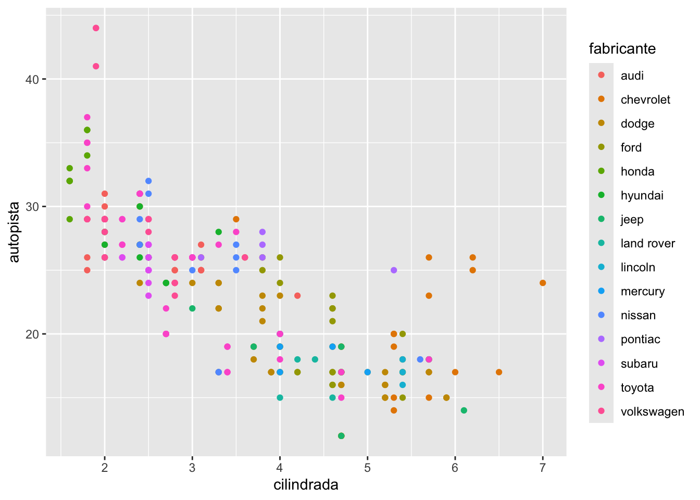
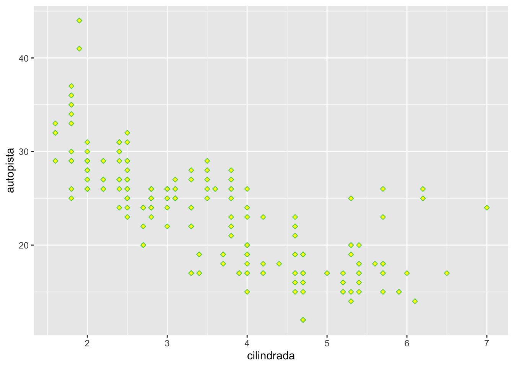
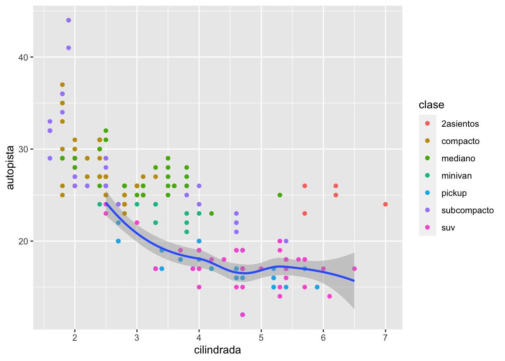

Chapter 2 Flujo de trabajo
El tema proviene de los siguientes sitios.
English: https://r4ds.had.co.nz/workflow-projects.html
Español: https://es.r4ds.hadley.nz/04-workflow-basics.html
2.1 Temas:
Reduciendo Errores
getwd()
setwd()
Su Proyecto
Selecionar el tab Session →→ Set Working Directory →→ To Project Directory ***
2.2 Creación de un proyecto:
- crear un proyecto para cada curso.
- crear un proyecto para cada investigación.
- No se te olvida de añadir tu archivos de datos en el proyecto.
- Describe claramente todos tus análisis y donde conseguiste la información.
- Describe tu interpretación de los análisis o gráficos.
- Correr los “scripts” uno a la vez para asegurar que funcione.
- knit el archivo .rmd para asegurar que no falte nada.
- no mezclar proyectos de investigación en un mismo proyecto.
## ── Attaching core tidyverse packages ─────────────────────────────────────────────── tidyverse 2.0.0 ──
## ✔ dplyr 1.1.3 ✔ readr 2.1.4
## ✔ forcats 1.0.0 ✔ stringr 1.5.0
## ✔ ggplot2 3.4.3 ✔ tibble 3.2.1
## ✔ lubridate 1.9.3 ✔ tidyr 1.3.0
## ✔ purrr 1.0.2
## ── Conflicts ───────────────────────────────────────────────────────────────── tidyverse_conflicts() ──
## ✖ dplyr::filter() masks stats::filter()
## ✖ dplyr::lag() masks stats::lag()
## ℹ Use the conflicted package (<http://conflicted.r-lib.org/>) to force all conflicts to become errors2.2.1 Un set de sobre carros en el archivo (paquete) datos
## # A tibble: 234 × 11
## fabricante modelo cilindrada anio cilindros transmision traccion ciudad
## <chr> <chr> <dbl> <int> <int> <chr> <chr> <int>
## 1 audi a4 1.8 1999 4 auto(l5) d 18
## 2 audi a4 1.8 1999 4 manual(m5) d 21
## 3 audi a4 2 2008 4 manual(m6) d 20
## 4 audi a4 2 2008 4 auto(av) d 21
## 5 audi a4 2.8 1999 6 auto(l5) d 16
## 6 audi a4 2.8 1999 6 manual(m5) d 18
## 7 audi a4 3.1 2008 6 auto(av) d 18
## 8 audi a4 quattro 1.8 1999 4 manual(m5) 4 18
## 9 audi a4 quattro 1.8 1999 4 auto(l5) 4 16
## 10 audi a4 quattro 2 2008 4 manual(m6) 4 20
## # ℹ 224 more rows
## # ℹ 3 more variables: autopista <int>, combustible <chr>, clase <chr>
2.2.3 Las funciones head y tail

## # A tibble: 6 × 11
## fabricante modelo cilindrada anio cilindros transmision traccion ciudad
## <chr> <chr> <dbl> <int> <int> <chr> <chr> <int>
## 1 audi a4 1.8 1999 4 auto(l5) d 18
## 2 audi a4 1.8 1999 4 manual(m5) d 21
## 3 audi a4 2 2008 4 manual(m6) d 20
## 4 audi a4 2 2008 4 auto(av) d 21
## 5 audi a4 2.8 1999 6 auto(l5) d 16
## 6 audi a4 2.8 1999 6 manual(m5) d 18
## # ℹ 3 more variables: autopista <int>, combustible <chr>, clase <chr>## # A tibble: 10 × 11
## fabricante modelo cilindrada anio cilindros transmision traccion ciudad
## <chr> <chr> <dbl> <int> <int> <chr> <chr> <int>
## 1 volkswagen new beetle 2 1999 4 auto(l4) d 19
## 2 volkswagen new beetle 2.5 2008 5 manual(m5) d 20
## 3 volkswagen new beetle 2.5 2008 5 auto(s6) d 20
## 4 volkswagen passat 1.8 1999 4 manual(m5) d 21
## 5 volkswagen passat 1.8 1999 4 auto(l5) d 18
## 6 volkswagen passat 2 2008 4 auto(s6) d 19
## 7 volkswagen passat 2 2008 4 manual(m6) d 21
## 8 volkswagen passat 2.8 1999 6 auto(l5) d 16
## 9 volkswagen passat 2.8 1999 6 manual(m5) d 18
## 10 volkswagen passat 3.6 2008 6 auto(s6) d 17
## # ℹ 3 more variables: autopista <int>, combustible <chr>, clase <chr>2.3 Información sobre el archivo
Usa el signo de interogación ? antes del nombre de la función o archivo
2.3.2 Construcción de mi primer gráfico
- el nombre del archivo es primero
- nombre de las variables (nombre de las columnas)
- si quiere tener un color para cada grupo
Code

2.3.3 La función shape para cambiar la forma de los puntos
La función shape es para cambiar el estilo de los puntos
Code

2.3.4 Salvar un grafico en otro formato
Como salvar la figura en formato recuperable para subir en otros documentos o compartir
Code

## Saving 7 x 5 in image## # A tibble: 234 × 11
## fabricante modelo cilindrada anio cilindros transmision traccion ciudad
## <chr> <chr> <dbl> <int> <int> <chr> <chr> <int>
## 1 audi a4 1.8 1999 4 auto(l5) d 18
## 2 audi a4 1.8 1999 4 manual(m5) d 21
## 3 audi a4 2 2008 4 manual(m6) d 20
## 4 audi a4 2 2008 4 auto(av) d 21
## 5 audi a4 2.8 1999 6 auto(l5) d 16
## 6 audi a4 2.8 1999 6 manual(m5) d 18
## 7 audi a4 3.1 2008 6 auto(av) d 18
## 8 audi a4 quattro 1.8 1999 4 manual(m5) 4 18
## 9 audi a4 quattro 1.8 1999 4 auto(l5) 4 16
## 10 audi a4 quattro 2 2008 4 manual(m6) 4 20
## # ℹ 224 more rows
## # ℹ 3 more variables: autopista <int>, combustible <chr>, clase <chr>Ejercicio para someter:
- baja el paquete “ggversa”
- activar el paquete “ggversa”
- mirar las variables del archivo en este paquete que se llama “Anolis”
- haga un gráfico que incluye lo siguiente
- en el eje de x = el SVL. que es el tamaño del lagarto del hocico a la cloaca y en la variable de “TAIL” en el eje de y.
- selecciona la variable “SEX_AGE” para color
- selecciona la función correcta para que cada “SEX_AGE” tenga su proprio gráfico
- salva el gráfico en .png o .jpg
- subir el gráfico aquí
## # A tibble: 6 × 15
## STUDY Survey_Site LOCATION TIME DATE SEASON SPECIES SEX_AGE HEIGHT
## <chr> <chr> <chr> <tim> <chr> <chr> <chr> <chr> <dbl>
## 1 Mark/recap North Tower El Verde 10:46 3/13… dry Anolis… Female 0
## 2 Mark/recap Woods walkway t… El Verde 10:15 2/20… dry Anolis… Juvenil 0
## 3 Mark/recap Woods walkway t… El Verde 11:15 2/21… dry Anolis… Male 0
## 4 Mark/recap North Tower El Verde 11:06 3/16… dry Anolis… Juvenil 0.3
## 5 Mark/recap North Tower El Verde 12:31 3/11… dry Anolis… Male 0.3
## 6 Mark/recap North Tower El Verde 01:00 3/9/… dry Anolis… Female 0.4
## # ℹ 6 more variables: DISTANCE_FROM_CENTERLINE <dbl>, PERCH_SUBSTRATE <chr>,
## # PERCH_DIAMETER <int>, WEIGHT <dbl>, SVL <dbl>, TAIL <dbl>2.4 Extracción de valores de un conjunto de datos
Aqui usamos el conjunto de datos de diamantes que se encuentra en el paquete ggplot2
2.4.0.1 Los primeros datos de un archivo
## # A tibble: 6 × 10
## precio quilate corte color claridad profundidad tabla x y z
## <int> <dbl> <ord> <ord> <ord> <dbl> <dbl> <dbl> <dbl> <dbl>
## 1 326 0.23 Ideal E SI2 61.5 55 3.95 3.98 2.43
## 2 326 0.21 Premium E SI1 59.8 61 3.89 3.84 2.31
## 3 327 0.23 Bueno E VS1 56.9 65 4.05 4.07 2.31
## 4 334 0.29 Premium I VS2 62.4 58 4.2 4.23 2.63
## 5 335 0.31 Bueno J SI2 63.3 58 4.34 4.35 2.75
## 6 336 0.24 Muy bueno J VVS2 62.8 57 3.94 3.96 2.482.5 Ejemplos de Gráficos
## Rows: 3831 Columns: 14
## ── Column specification ───────────────────────────────────────────────────────────────────────────────
## Delimiter: ","
## chr (8): FL_DATE, OP_UNIQUE_CARRIER, ORIGIN, ORIGIN_CITY_NAME, ORIGIN_STATE_...
## dbl (6): DEP_TIME, DEP_DELAY, CRS_ARR_TIME, ARR_TIME, ARR_DELAY, CANCELLED
##
## ℹ Use `spec()` to retrieve the full column specification for this data.
## ℹ Specify the column types or set `show_col_types = FALSE` to quiet this message.## # A tibble: 6 × 14
## FL_DATE OP_UNIQUE_CARRIER ORIGIN ORIGIN_CITY_NAME ORIGIN_STATE_ABR DEST
## <chr> <chr> <chr> <chr> <chr> <chr>
## 1 2/1/18 NK SJU San Juan, PR PR MCO
## 2 2/1/18 AA MIA Miami, FL FL SJU
## 3 2/1/18 AA SJU San Juan, PR PR DFW
## 4 2/1/18 AA SJU San Juan, PR PR MIA
## 5 2/1/18 AA SJU San Juan, PR PR ORD
## 6 2/1/18 AA MIA Miami, FL FL SJU
## # ℹ 8 more variables: DEST_CITY_NAME <chr>, DEST_STATE_ABR <chr>,
## # DEP_TIME <dbl>, DEP_DELAY <dbl>, CRS_ARR_TIME <dbl>, ARR_TIME <dbl>,
## # ARR_DELAY <dbl>, CANCELLED <dbl># Visualización de datos
Fecha de la ultima revisión
## [1] "2023-10-26"El tema proviene de los siguientes sitios.
English: https://r4ds.had.co.nz/data-visualisation.html
Español: https://es.r4ds.hadley.nz/03-visualize.html
2.6 Temas:
- Introducción
- paquete “tidyverse”
- datos de “mgp”
- ggplot2
- El concepto de la gramática de gráficos


2.6.4 Regresión Loess
Vea este enlace para información sobre la regresión LOESS
<https://en.wikipedia.org/wiki/Local_regression>
## [1] "fabricante" "modelo" "cilindrada" "anio" "cilindros"
## [6] "transmision" "traccion" "ciudad" "autopista" "combustible"
## [11] "clase"Code
## `geom_smooth()` using method = 'loess' and formula = 'y ~ x'
2.6.5 Regresión LOESS de un grupo
Code
## `geom_smooth()` using method = 'loess' and formula = 'y ~ x'
2.6.6 Regresión LOESS: dos alternativas
Code
## `geom_smooth()` using method = 'loess' and formula = 'y ~ x'
Code
## `geom_smooth()` using method = 'loess' and formula = 'y ~ x'


2.7 Leer datos de un archivo
- Ejercicios:
Hacer los ejercicios en la sección 3.2.4 del libro en español
- Aestética
- Ejercicios:
Hacer los ejercicios en la sección 3.3.1 del libro en español
- Problemas comunes
- Separar en facetas
- Ejercicios:
Hacer los ejercicios en la sección 3.5.1 del libro en español
- Objetos geométricos ***
- Ejercicios:
Hacer los ejercicios en la sección 3.6.1 del libro en español
- Transformación estadísticas
- Ejercicios:
Hacer los ejercicios en la sección 3.7.1 del libro en español
- Ajuste de posición
- Ejercicios:
Hacer los ejercicios en la sección 3.8.1 del libro en español
- Sistema de coordenadas
- Ejercicios:
Hacer los ejercicios en la sección 3.9.1 del libro en español
Ejercicio para entregar ( 6 puntos)
- Activa el paquete “ggversa”
- Activa el paquete “tidyverse”
- Utiliza los datos “PartosInfantes”. Leen la información sobre el archivo Son tres graficas que tendrán que someter
- Hacer un gráfico de puntos entre el número de muertes de infante y la cantidad de madres que mueren en el parto. (1 punto)
- Añadir al gráfico anterior un modelo lineal (linear model). Y Demostrando todos los datos con un color por region geografica, o sea añadir un color a los puntos por Grupo “region geográfica”. AM=America, EU= Union Europea, AF= Africa, O=Oceania, AS=Asia, Medio Oriente, (2 puntos)
- Enseña el modelo de regresion lineal solamente para AFRICA y ASIA (en la misma gráfica) (3 puntos)
Someter las tres gráficas en formato .jpeg o .png en el portal.
## NMI NMP GSPC Grupo Pais
## 1 8723 400 605.1878 AM Argentina
## 2 60 5 1720.1595 AM Bahamas
## 3 42 1 1146.0417 AM Barbados
## 4 121 2 278.5792 AM Belize
## 5 7756 540 208.7842 AM Bolivia
## 6 45682 1400 947.4277 AM BrazilHacer un grafico de puntos entre el numero de muertes por infante y la cantidad la cantidad de madres que mueren en el parto
Añadir al grafico anterior un modelo lineal (linear model)
Añadir un color a los puntos por grupo “region”. AM=America, EU= Union Europea, AF= Africa, O=Oceania, AS=Asia, Medio Oriente,
Demostrando todos los datos con un color por region geografica, enseña el modelo de regresion lineal solamente para AFRICA